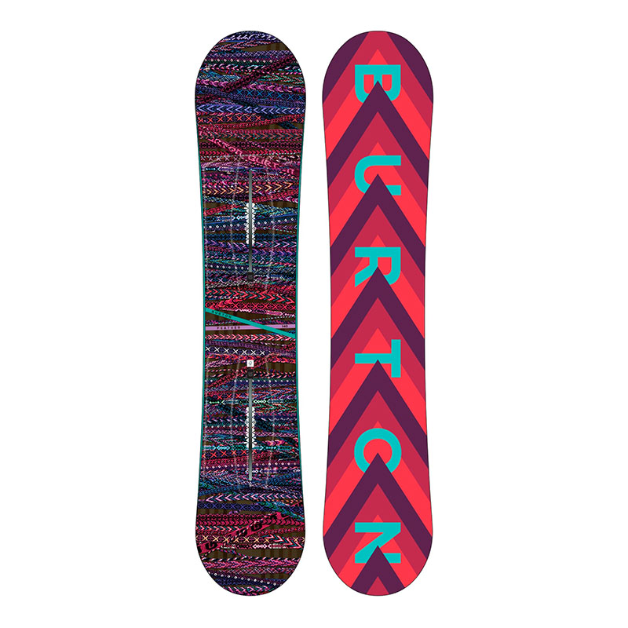

Сноуборд BURTON Feather — это надежный снаряд, который позволит с легкостью освоиться вам в сноубординге и легко
выйдти на новый уровень. С ним невероятно легко прогрессировать: благодаря направленной геометрии вам легче
контролировать доску и выплывать из глубокого снега, а прогиб Flat-Top делает процесс обучения быстрым и
безболезненным, обеспечивая стабильность во время езды.
- Прогиб: Flat Top™
- Форма: Directional Shape, 3-6mm Taper
- Жесткость на изгиб: Twin Flex
- Сердечник: FSC™ Certified Super Fly® 800G Core, Dualzone™ EGD™
- Стекловолокно: Biax™ Fiberglass
- База: Extruded Base
- Технология установки креплений: The Channel®
- Особенности: Squeezebox Low, Filet-O-Flex, Super Sap® Epoxy
- Уровень катания: Начинающий
- Предназначение: All Mountain
Особенности:
Технология Squeezebox Low: большая упругость в зонах за пределами краев креплений и более гибкая зона между закладных,
что позволяет увеличить отзывчивость при меньших усилиях.
Ультра тонкий профиль доски Filet-O-Flex: позволяет сохранить мягкость снаряда для катания в парке, но при этом не
потерять стабильности и прочности.
Технология Super Sap® Epoxy: используется биосодержащая смола, которая уменьшает углеродный след на 50% по сравнению с
обычными эпоксидами.